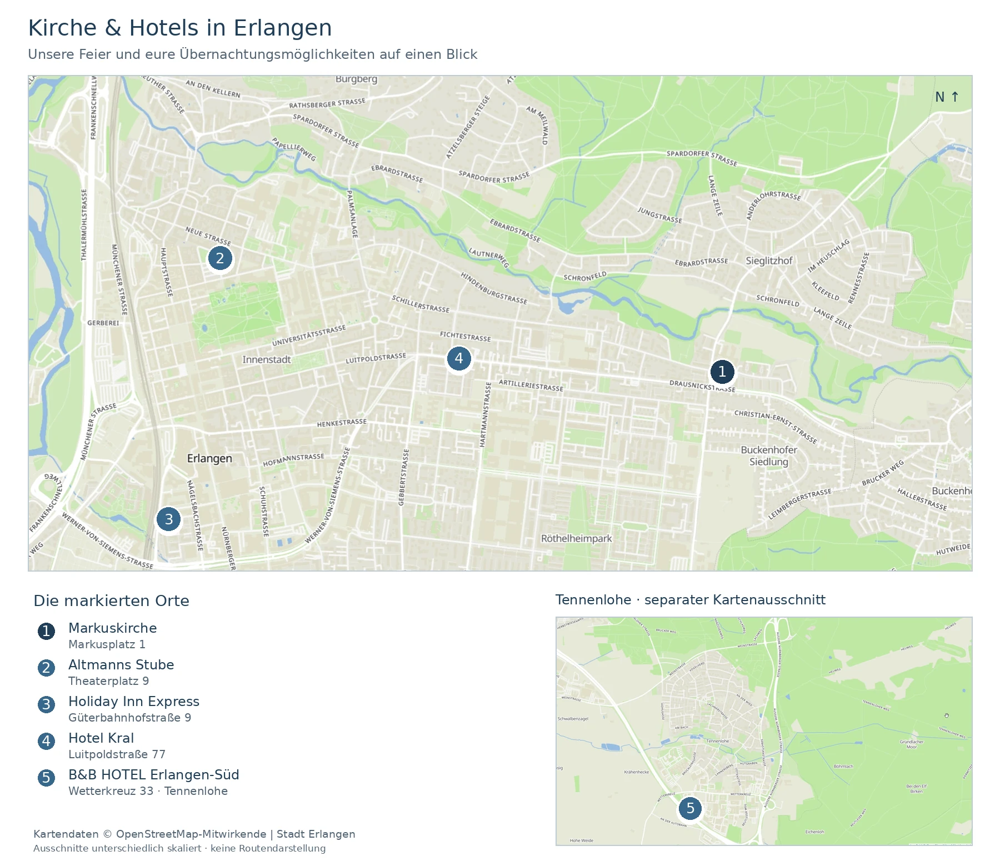

2. Oktober 2027 · Erlangen
Wir freuen uns, mit euch zu feiern!
Am Samstag, 2. Oktober 2027, heiraten wir kirchlich in Erlangen. Die Trauung beginnt um 13:00 Uhr in der Markuskirche. Anschließend feiern wir im Löhesaal nebenan.
Trauung & Feier
Wann und wo?
Samstag, 2. Oktober 2027, 13:00 Uhr: kirchliche Trauung in der Markuskirche Erlangen. Anschließend feiern wir im Löhesaal im Löhehaus, Sieglitzhofer Straße 2a, 91054 Erlangen.
Ablauf
- 13:00 Uhr – kirchliche Trauung
- Anschließend – Sektempfang
- Danach – Kaffee und Kuchen
- Später – Abendessen
- Danach – Party
Die genauen Uhrzeiten nach der Trauung folgen.
Gut zu wissen
Dresscode
Wenn ihr eure eigenen Hochzeitskleider oder Hochzeitsanzüge noch habt – und noch hineinpasst ;) –, tragt sie sehr gerne noch einmal! Ansonsten: Kommt so, wie ihr euch wohlfühlt.
Beiträge und Überraschungen
Unsere Trauzeug:innen Jonas Ritzer und Fio Findlay koordinieren Beiträge und Überraschungen. Ihr erreicht sie künftig unter [E-MAIL-ADRESSE DER TRAUZEUG:INNEN FOLGT].
Geschenke
Das größte Geschenk ist, wenn ihr mit uns feiert. Falls ihr uns darüber hinaus etwas schenken möchtet, freuen wir uns vor allem über einen Beitrag zu unserer Hochzeitsreise.
Anreise & Unterkunft
Parken und Anfahrt
Nach unserem derzeitigen Planungsstand gibt es hinter der Kirche etwa 15 Parkplätze. Bitte betrachtet diese Zahl noch nicht als bestätigte Stellplatzgarantie. Weitere Parkmöglichkeiten, zum Beispiel an der Wirtschaftsschule, prüfen wir noch; Details zu Nutzung, Zugänglichkeit und Fußweg folgen. Bitte bildet nach Möglichkeit Fahrgemeinschaften.
Hinweise zur Barrierefreiheit ergänzen wir nach Prüfung.
Mit Bus und Bahn
Eure Zielhaltestelle heißt „Erlangen Markuskirche“. Die passende Verbindung findet ihr in der VGN-Fahrplanauskunft. Prüft dort auch eure Rückfahrt nach der Feier.
Gut schlafen nach der Feier
Für unterschiedliche Wünsche und Budgets haben wir euch ein paar Hotels herausgesucht:
- B&B HOTEL Erlangen-Süd · Eher preisbewusst, außerhalb der Innenstadt. Eine zusätzliche Fahrt zur Feier einplanen.
- Holiday Inn Express Erlangen · Zentral und praktisch bei Bahnanreise, Frühstück inklusive. Zur Feier geht’s mit einer weiteren Fahrt.
- Altmanns Stube · Kleines Altstadthotel, eher für etwas mehr Budget. Späten Check-in bitte vorher abstimmen.
- Hotel Kral · Zimmer und Apartments — auch für Familien interessant. Parkplätze und 24-Stunden-Check-in-Service laut Hotel.
Bitte bucht direkt beim Hotel und prüft Preise und Verfügbarkeit für unser Wochenende. Es sind keine Zimmer reserviert.
Kirche und Hotels im Überblick

Kartendaten: © OpenStreetMap-Mitwirkende | Stadt Erlangen. Die Kartenausschnitte sind unterschiedlich skaliert.
Gebt uns bitte Bescheid
Bitte gebt uns bis zum 1. März 2027 Bescheid, ob ihr dabei seid. Tragt alle teilnehmenden Personen mit ihrem jeweiligen Essenswunsch ein.
Allergien und Unverträglichkeiten könnt ihr freiwillig angeben. Bitte nennt nur, was für die Bewirtung wichtig ist, und stimmt Angaben zu Begleitpersonen mit ihnen ab.
Online-Rückmeldung
Das Formular wird erst nach Klick geladen. Dabei wird eine Verbindung zu Tally hergestellt. Eure Antworten werden bei Tally gespeichert und zur Hochzeitsplanung an unsere private Notion-Datenbank übertragen. Hinweise zu euren Daten.
Falls die eingebettete Ansicht nicht funktioniert: Formular direkt bei Tally öffnen (neuer Tab).
Für Rückfragen, Änderungen oder eine Rückmeldung ohne Formular schreibt an Jonathan.sudermann@mail.de.